Professional Project · 2023–2024
Hilton Hotel,
Kathmandu
Façade control from architectural form to fabrication.
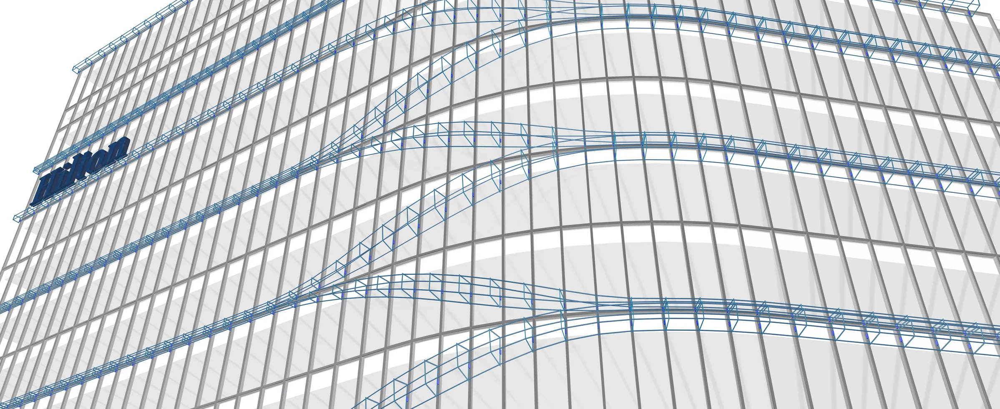
Hilton Kathmandu combines a curved tower profile, stacked terraces and continuous GFRC scissor bands. At Studio Symbiosis, I developed the façade-control workflow that connected these architectural moves to fabrication: a parametric model governed the band geometry, the curtain-wall grid set the component breaks, and one shared dataset generated the drawings and mould information used by the workshop.
01 / Form Evolution
From site boundary to a terrace-and-band façade
The Option 2 form study begins with the Kathmandu site and a 65 m volume. The mass bends toward the mountain view, then opens at the drop-off and all-day dining level. Carved terrace slabs create balcony space at the guest-room floors; the façade follows the same curved perimeter rather than treating the building envelope as an applied finish.
The six-frame sequence makes the architectural logic legible before fabrication begins: site line, maximum volume, directional bend, ground-level carve, stacked balcony slabs and the completed vertical façade.
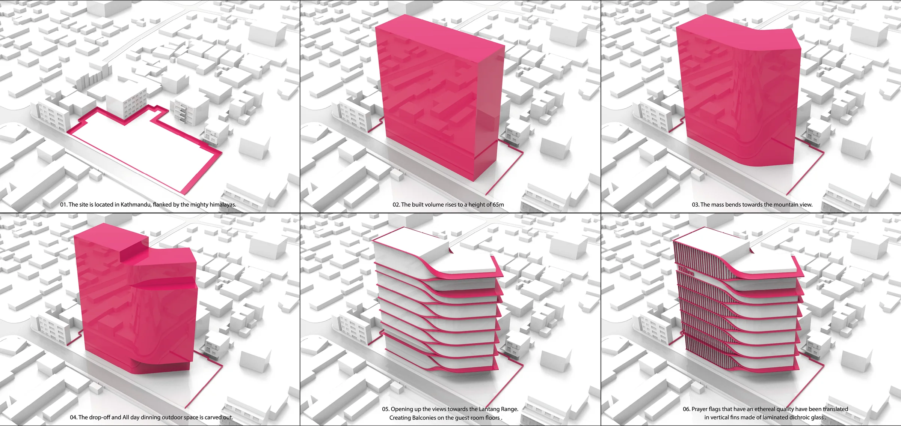
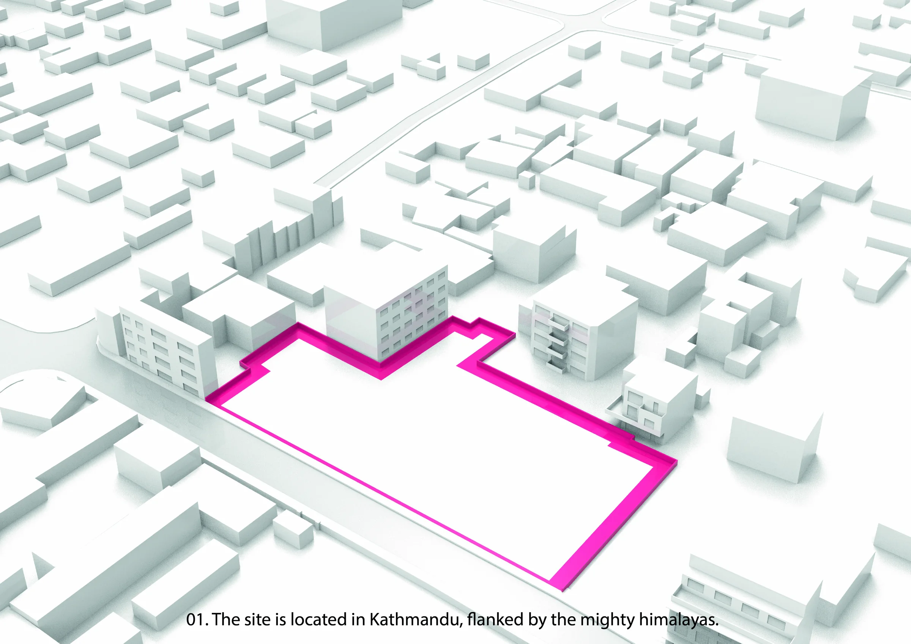
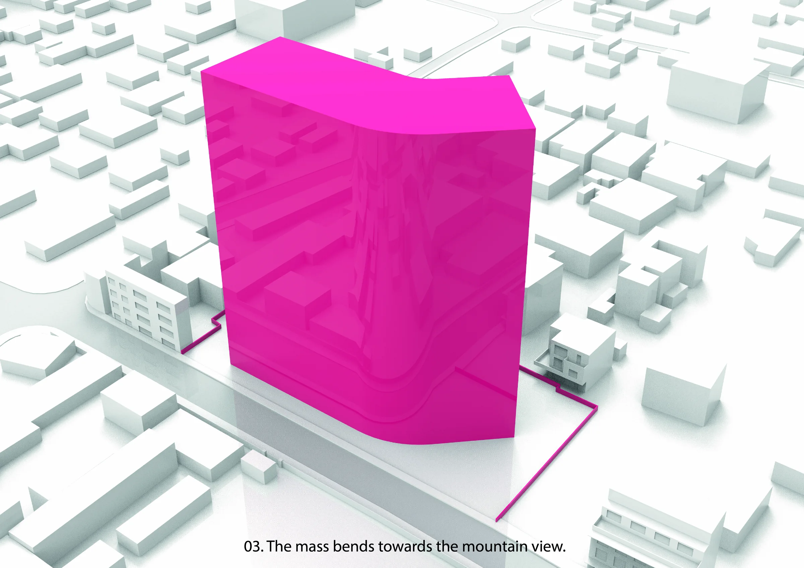
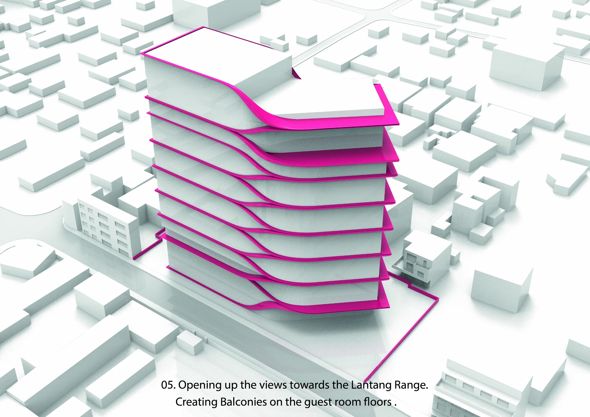
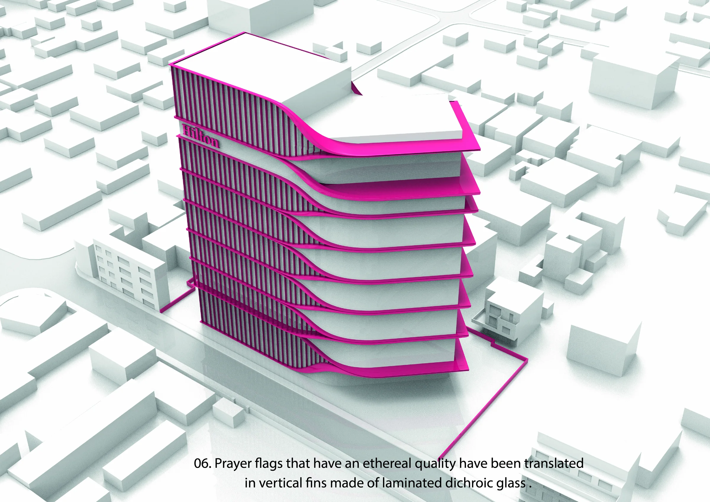
02 / Façade Control
Coordinating GFRC bands, curtain wall and supports
The visible bands and the support system were developed together. The control model coordinated band surfaces with curtain-wall mullions, cleat locations, brackets and the mild-steel frame behind the GFRC. It allowed every curved condition to remain connected to its support geometry as the form changed.
Component boundaries follow the curtain-wall rhythm, typically spanning two glass panels. This makes a continuous architectural gesture measurable, drawable and traceable through production.
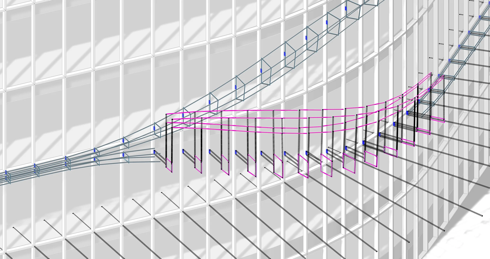
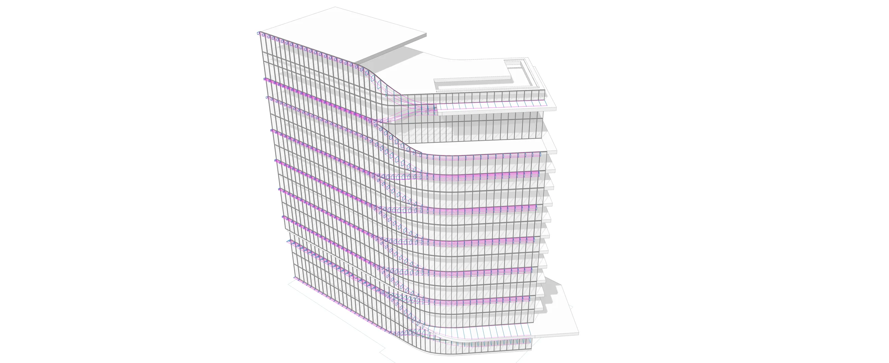
03 / Parametric Band Development
Curves, sections and component limits
The parametric model turns each band into an editable fabrication system. Centre curves, section profiles and panel breaks update together, so changes to the façade can be checked against glass widths, support positions and the practical size of a fabricated component.
The animations show the same logic at two scales: the continuous bands moving around the tower, and the local control points and seams used to divide a changing surface into pieces.


04 / Drawing Automation
One façade model, five coordinated drawing states
Rather than redrawing each band condition separately, the shared script produced coordinated isometric views as layers were added to the façade model. Site and slab geometry establish the reference; mullions and glass then provide the grid that controls the band and component information.
This method allowed the fabrication package to adapt to multiple band geometries while keeping the relationship between architecture, support system and shop drawings consistent.
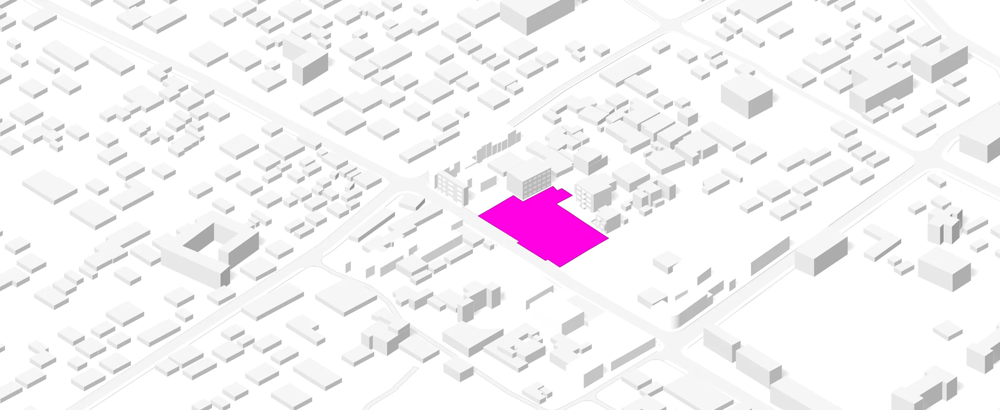
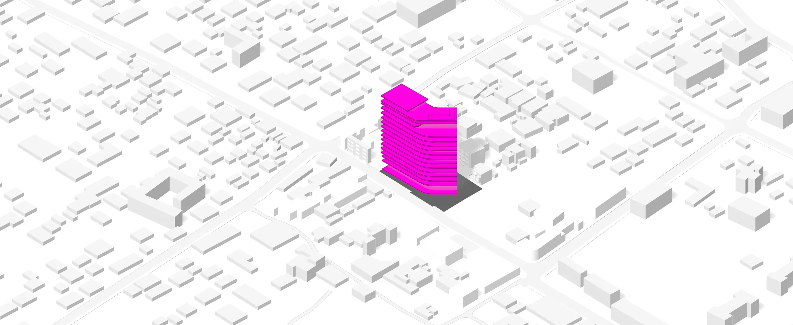
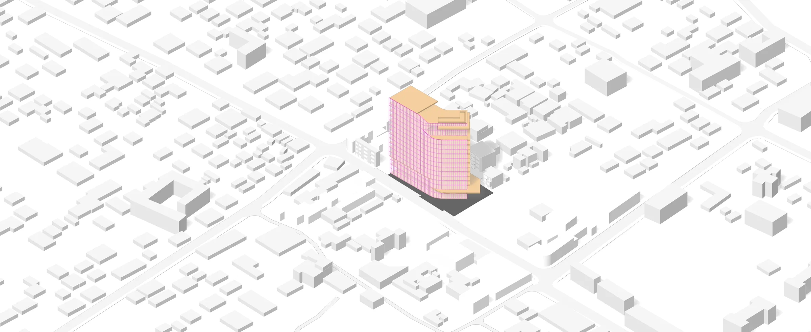
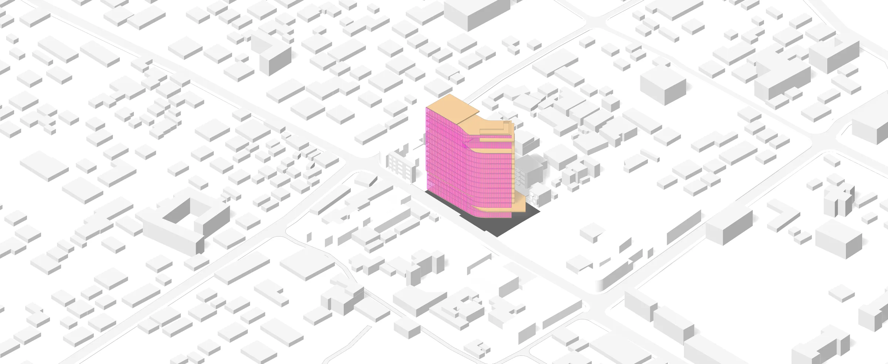
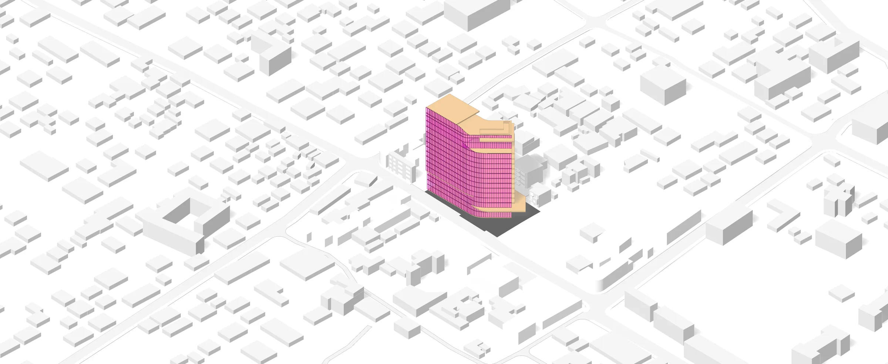
05 / Prototype to Production
Testing the digital output at full scale
The workshop prototypes tested the physical consequence of the drawing logic. CNC-cut rib profiles assembled into full-scale mould frameworks; the team then used the moulds to make and inspect GFRC pieces. These trials informed the fabrication method before larger production runs.
The photographs show why component labelling and section profiles matter: each rib belongs to a specific location in the formwork, and the assembled sequence has to reproduce the intended curvature without ambiguity.
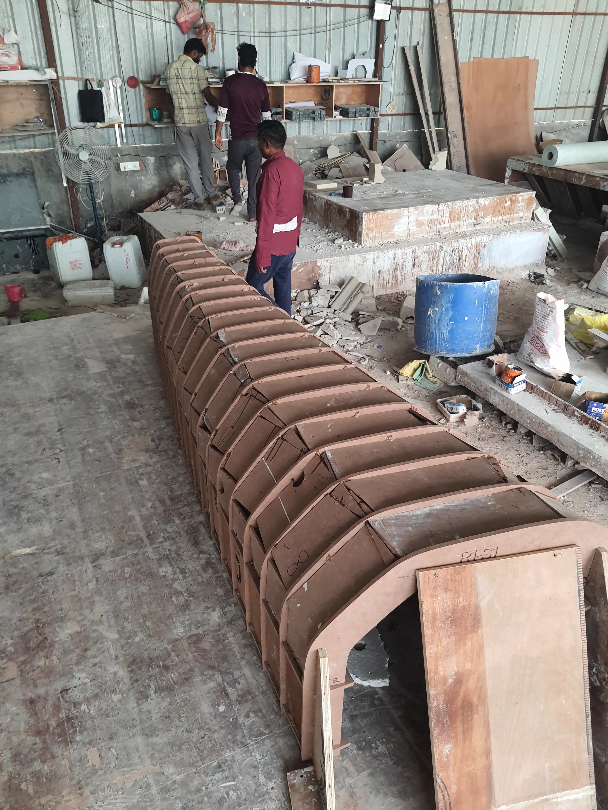
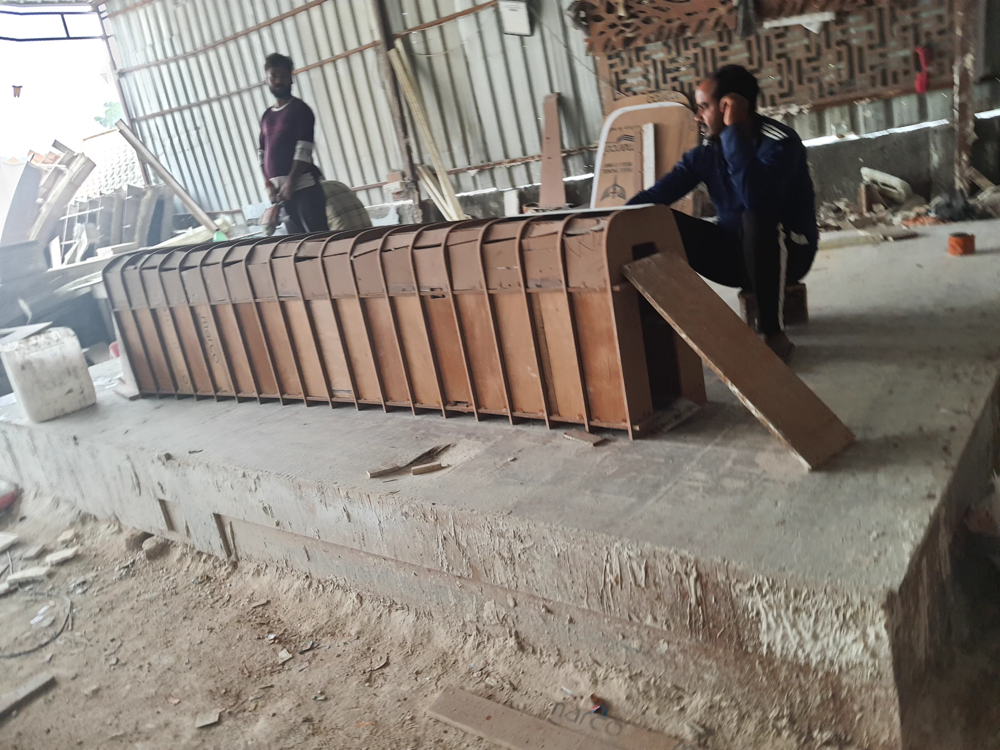
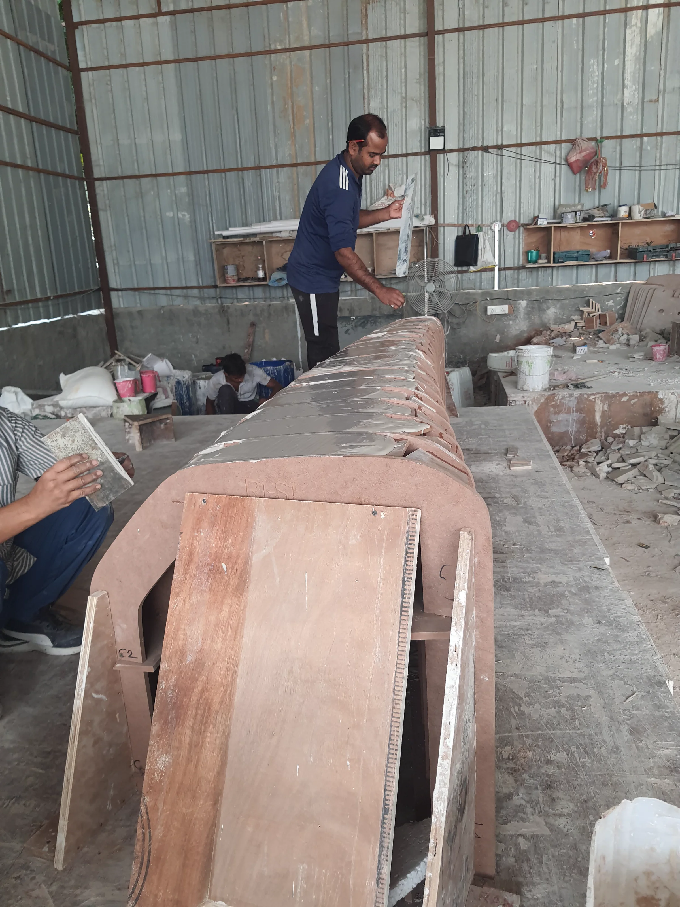
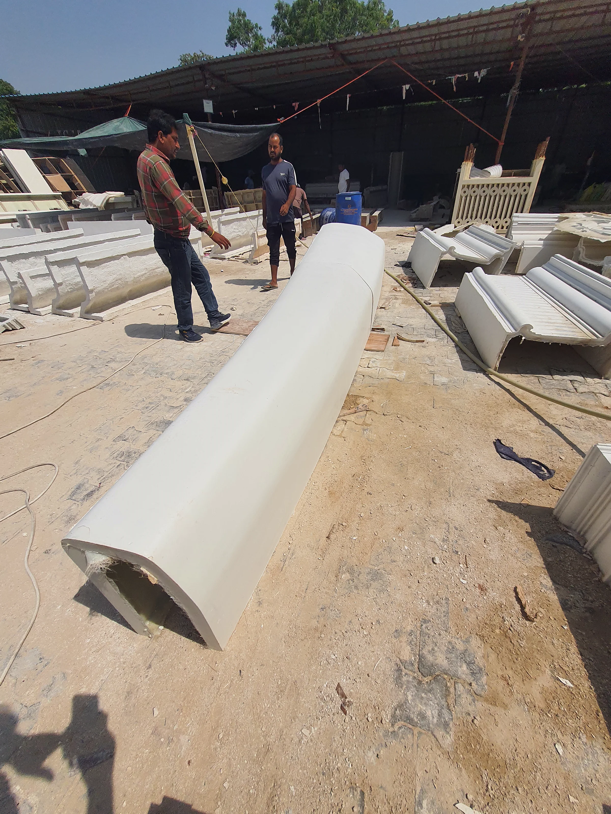
Contribution
My contribution focused on turning a complex façade concept into a controlled fabrication workflow: parametric band development, curtain-wall coordination, component rationalisation, drawing automation, shop-drawing production and mockup development. The work supported Studio Symbiosis' wider architectural project and its fabrication partners.
Credits
Architectural project: Studio Symbiosis.
Project team: Amit Gupta, Britta Knobbel and Naitik Sharma.
Images, animations and workshop photographs: supplied Studio Symbiosis / project documentation.